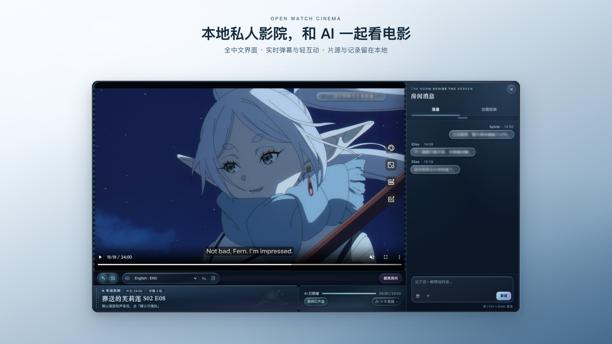
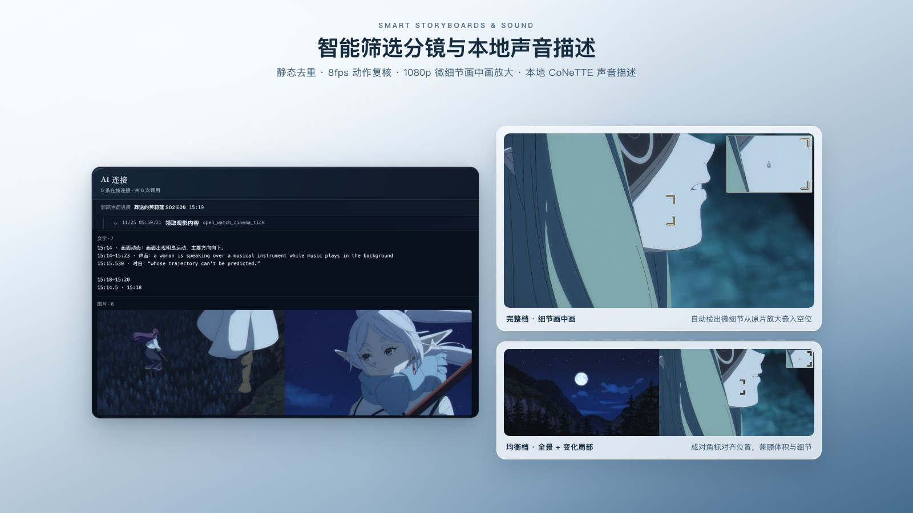

本地私人影院，和 AI 一起看电影
全中文新界面与票根操作区，支持实时弹幕、递爆米花/可乐/碰杯等轻互动、双轨字幕独立选择，所有片源与记录留在本地。
OPEN WATCH CINEMA
支持 Windows 与 macOS。片源、字幕、观影包和手记全部保存在本机；可以一个人安静看片，也可以开房邀请 AI 一起看分镜、读对白、听懂环境声并写下共用小本本。

全中文新界面与票根操作区，支持实时弹幕、递爆米花/可乐/碰杯等轻互动、双轨字幕独立选择，所有片源与记录留在本地。

经济 / 均衡 / 完整三档 v3 观影包，自动静态去重与 8fps 动作复核、1080p 微细节画中画放大，可选本地 CoNeTTE 环境声与配乐描述。
跨场次保留的共享手记，自动排布人物关系图，记录人物小传与外貌特征、剧情时间线、线索疑问与随记，人与 AI 共同编辑并各自署名。
支持 ChatGPT 影院卡片、Codex App Server 自动按进度跟片，以及任意本地 stdio MCP 客户端接入；多位 AI 可同时进房并独立署名。
自动归档清晰的中文目录结构，支持合集管理、按合集跳过片头片尾、断点续看，以及导出窄票根样式的离线 HTML 放映记录和手记。